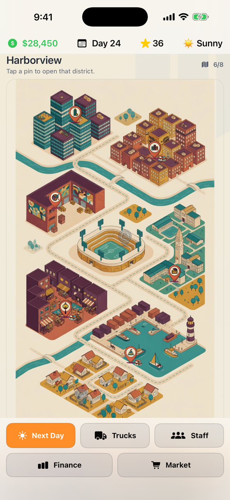
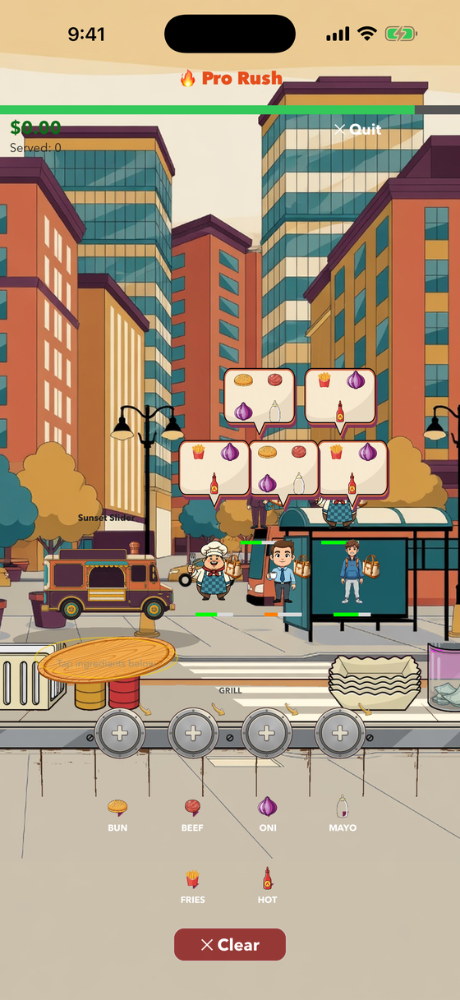
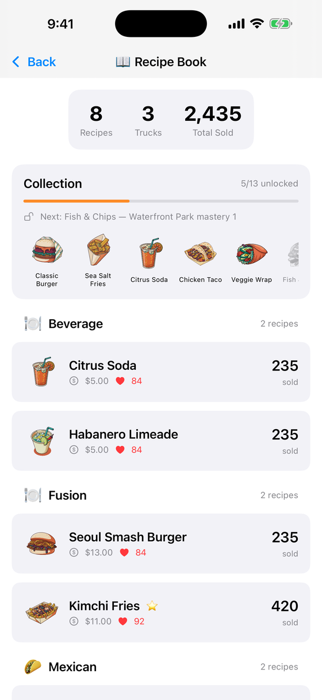
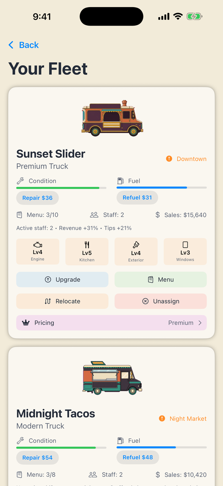

Read the street
Each district has its own tastes, wealth and peak hours. Weather, rivals and local demand all move day to day — the map tells you where today's money is.
Start with a beat-up van and a single burger. Work a real cookline under pressure, read what each neighbourhood wants, and grow into a fleet across two cities — from the Harborview night market to the sunlit coast of Costa Verde.

Every shift is a live service rush. Orders queue, the grill takes real seconds, and the difference between a good day and a bad one is whether you thought one customer ahead.

Proteins, rice and fries need heat and hold a station while they cook. Everything else plates in a tap. Start the next customer's order on a free grill while you finish the current one — a busy queue rewards planning, not panic.

Thirteen dishes unlock across the campaign, gated behind reputation and district mastery. Working the waterfront until you know it is what finally puts a lobster roll on your board.

A better kitchen cooks faster and runs more stations. More serving windows lengthen the queue you can hold. Set a pricing strategy per truck and trade margin against footfall — premium suits the financial district, happy hour fills a quiet promenade.
Both cities are illustrated maps you travel by tapping a pin. Costa Verde is earned, not reset into — everything you built comes with you.


Each district has its own tastes, wealth and peak hours. Weather, rivals and local demand all move day to day — the map tells you where today's money is.
Chefs, servers, drivers and managers, each with traits that matter. Put the fast chef on the truck working the busiest corner.
Ingredient prices move daily. Supplier contracts, logistics and stock control decide whether a busy day is also a profitable one.
Daily challenges, weekly contracts, seven-day City Seasons with a playable finale, and franchise perks that outlast a run.
No connection needed. Your trucks keep earning while the app is closed, and the day is waiting when you come back.
Reduced Motion, VoiceOver support for the rush, and adjustable touch targets — the shift should be hard, not the interface.
Free to download. One van, one burger, and a lunch rush that does not care whether you are ready.